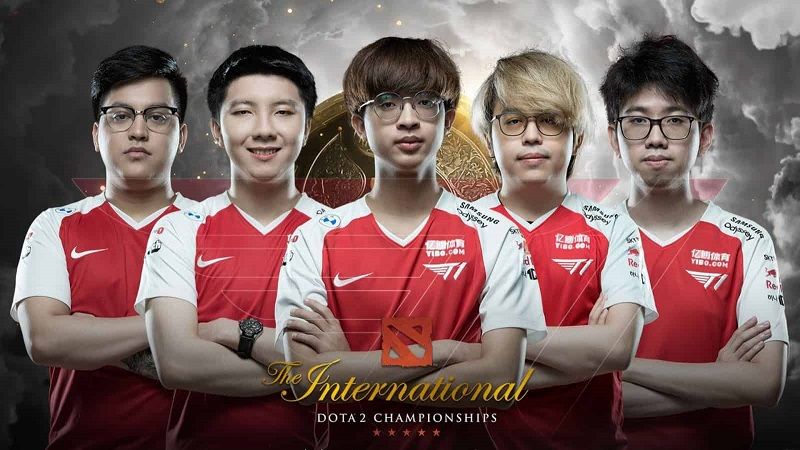
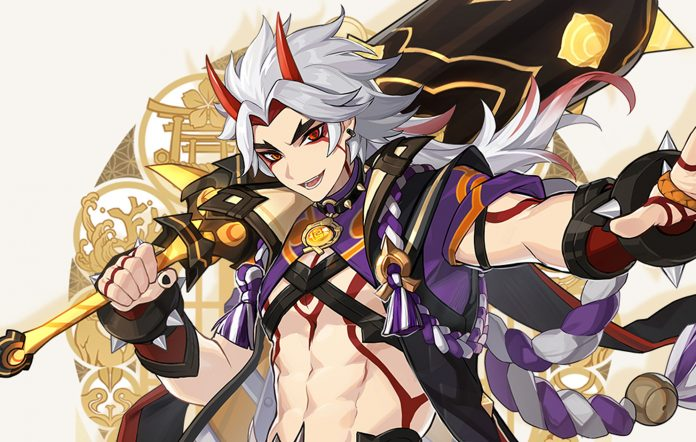

Biodata
| Nama | Fadhillah Azhar Alsani |
| NIM | 119140217 |
| Prodi | Teknik Informatika |
| Tempat, Tanggal Lahir | Jakarta, 27 Oktober 2000 |
| Umur | 20 Tahun |
| Golongan Darah | B |
| Alamat | Jalan Puncak Sekuning No. 38C |
News
Apex Legends Lead Designer is Leaving Respawn Entertainment
The tenth season of Apex Legends is drawing to a close. The season included a new playable character, a new battle pass, and huge changes to the World's Edge map. Respawn is looking to turn up the heat with even more content, as there will be Halloween-themed cosmetics and maps coming to Apex Legends later this month. However, it also happens to be the last season that one of the lead designers of the game, Chin Xiang Chong, will be working on.
More
Undying push OG, T1 into The International 10 upper bracket with big win over Evil Geniuses
Heading into the final handful of games in The International 10’s group stage, OG, T1, and Evil Geniuses were all nearly tied for the final two spots left in the Group B upper bracket. After T1 swept Thunder Predator and OG split their series with Invictus Gaming, Evil Geniuses needed to 2-0 Undying to force a tiebreaker.
More
‘Genshin Impact’ teases two new playable Geo characters
Genshin Impact‘s developer took to Twitter today (October 11) to share a first look at the RPG’s latest, upcoming playable characters. First up is Arataki Itto, who has only been mentioned in the free-to-play game by various characters and NPCs until now . Itto is “the first and greatest head of the Arataki Gang” in the Inazuma region and will wield the Geo Vision. His artwork shows him carrying what looks to be some sort of claymore-type weapon while he bears the colours of his clan.
More